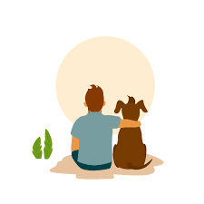

LOOKING FOR NEARBY VETS ?
Search for Vets near you to get your strays and pets sprayed and vaccinated in time for better nourishment and better life.
First Aid Techniques for Rescuing Stray Animals: A Compassionate Response!
Encountering a stray animal in need of help can be a distressing experience. Knowing basic first aid techniques can make a significant difference in providing immediate care and increasing their chances of survival. This one-page guide focuses on equipping you with essential first aid skills to aid in the rescue of stray animals.
Assess the Situation:
Approaching a stray animal requires caution for your safety and to prevent further harm or distress. Observe the animal from a safe distance to assess its condition and behavior. Look for visible injuries, signs of pain or distress, and assess their level of consciousness. Maintain a calm and non-threatening demeanor, as scared or injured animals can act unpredictably.
Contact Animal Control or Local Shelters:
Before administering first aid, reach out to local animal control or animal rescue organizations. They can offer guidance and may dispatch professionals to handle the situation. These organizations have the experience, equipment, and resources to handle different rescue scenarios, ensuring the safety of both the animal and yourself.
Basic First Aid Techniques:
While waiting for professional help to arrive, you can provide basic first aid to alleviate the animal's suffering. Here are essential first aid techniques:
- Approach with care: Move slowly and speak softly to gain the animal's trust. If possible, use a towel or blanket to create a makeshift stretcher for transporting injured animals.
- Control bleeding: Apply gentle pressure with a clean cloth or bandage to any wounds that are actively bleeding. Elevate the wounded area if possible. Avoid tourniquets unless it is a severe arterial bleed.
- Stabilize fractures: If you suspect a broken bone, immobilize the injured limb using splints or supportive materials like rolled-up newspapers or cardboard. This helps prevent further injury during transportation.
- Provide comfort: Keep the animal calm and minimize stress. Offer water if the animal is conscious and able to drink. Create a quiet and secure space.
- Protect against heat or cold: In extreme weather conditions, provide shelter or shade to prevent overheating or hypothermia.
- . Avoid administering medications: Refrain from giving over-the-counter medications to the animal, as it may worsen their condition or interfere with professional treatment.
Conclusion:
Rescuing stray animals requires both empathy and basic first aid knowledge. By assessing the situation, contacting local authorities, and providing immediate care, you can significantly improve their chances of survival and alleviate their suffering. Remember to prioritize your safety and seek professional assistance whenever dealing with potentially dangerous situations. Together, we can make a difference in the lives of these vulnerable creatures and contribute to a more compassionate world for animals in need.
